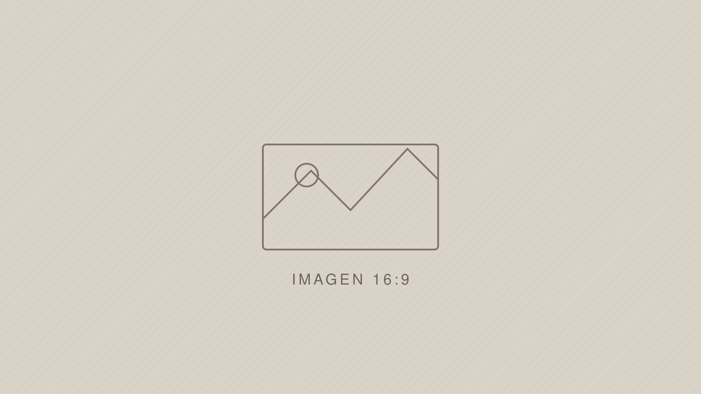

Transparencia
Balances publicados en tiempo y forma, auditoría externa y portal abierto de ejecución presupuestaria.
Primeros 100 díasElecciones · Independiente · [fecha]
Diagnóstico con números, compromisos con plazo y un mecanismo para que cualquier socio pueda controlar si se cumplen.

01 · Quién es
Texto de ejemplo. Acá va la biografía del candidato: de dónde viene, cuál es su vínculo con el club y qué lo trajo hasta esta candidatura.
El segundo párrafo desarrolla la trayectoria profesional y la experiencia de gestión que respalda la propuesta. Si hay antecedentes verificables, este es el lugar: son el principal argumento de credibilidad de toda la pieza.
[Dato a confirmar] — cualquier cifra, fecha o antecedente concreto debe verificarse antes de publicar.
02 · Diagnóstico
Las cifras de esta sección son de ejemplo. Van reemplazadas por datos verificables con su fuente citada al pie — es lo que sostiene la credibilidad de toda la página.
03 · Compromisos
Cada punto lleva un plazo explícito. Lo que no tiene fecha no es un compromiso, es una intención.
Balances publicados en tiempo y forma, auditoría externa y portal abierto de ejecución presupuestaria.
Primeros 100 díasDirección deportiva con contrato plurianual y criterios de contratación escritos y públicos.
Primeros 100 díasPresupuesto mínimo garantizado para juveniles, con informe anual de jugadores promovidos.
Año 1Atención resuelta, padrón depurado y consulta vinculante para las decisiones patrimoniales.
Año 1Plan de obras priorizado, licitado y con avance publicado trimestralmente.
Años 2 a 4Recuperación de disciplinas y presencia sostenida del club en Avellaneda.
Años 2 a 4La idea
Un club no se dirige con promesas. Se dirige con un plan.
04 · En primera persona
05 · El equipo
Vicepresidencia
Secretaría general
Tesorería
Fútbol profesional